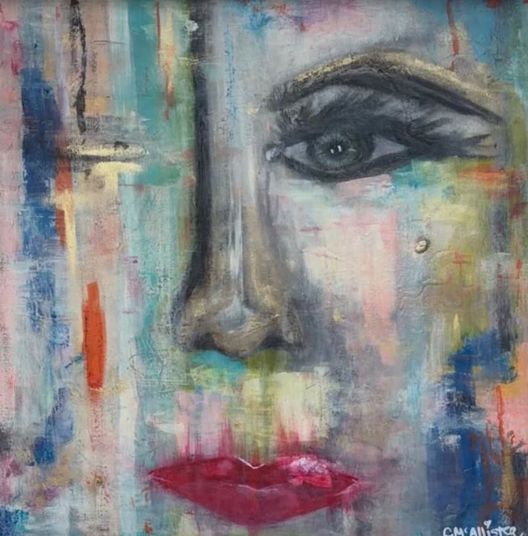
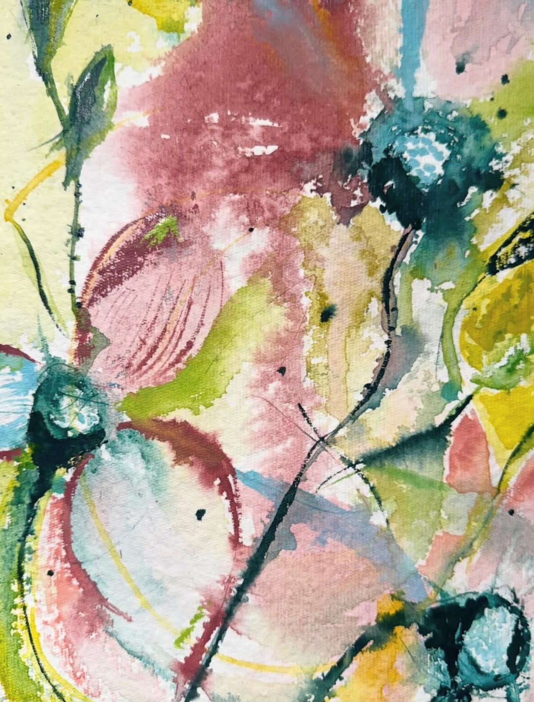

The gallery of Dr. Caryn McAllister
Beauty, color
& joy — for all.
Original watercolors, acrylics and mixed media, curated with a purpose — every piece in the collection is part of Dr. McAllister’s hope for a world with greater access to healthcare.

01 On View
Highlights from the current collection — drag to explore.
02 The Collection
Click any piece to view it up close.
“Bringing beauty, color and joy to all — in the hope of increased access to healthcare.”
— Dr. Caryn McAllister
03 The Gallery

This gallery is the work of Dr. Caryn McAllister — a doctor of physical therapy, the founder of a house-call therapy practice in Connecticut, and a lifelong believer that beauty is a form of care. After three decades spent helping people move through the world more freely, she brings that same warmth and attention to the collection gathered here.
The works move between loose, joyful florals, windswept coastal landscapes, a whimsical menagerie of hares, owls and dancers, and layered abstracts that reward a longer look. The thread through all of it is generosity — color offered freely, to anyone who needs a little more of it.
Through the nonprofit foundation Dr. McAllister established in 2016, the gallery is woven into a larger mission: expanding access to care and health education for those who need it most. Collecting from the gallery supports that hope.
- Founder & DirectorDr. Caryn McAllister, PT, DPT
- CollectionWatercolor · Ink · Acrylic · Mixed media
- LocationConnecticut
- Instagram@drcarynmcallister
- ElsewhereFacebook · LinkedIn
Collect
Bring a piece home.
Originals are available, and commissions are warmly welcomed. For sizes, pricing and availability — or to see a painting in person — reach out to Dr. McAllister any time.